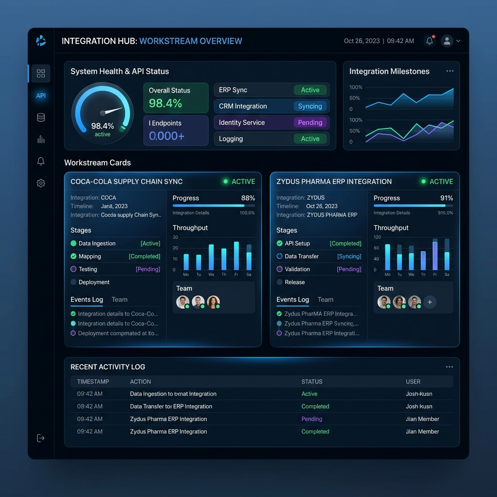
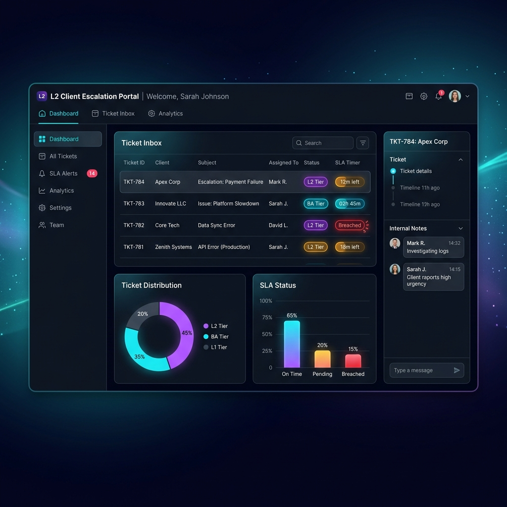
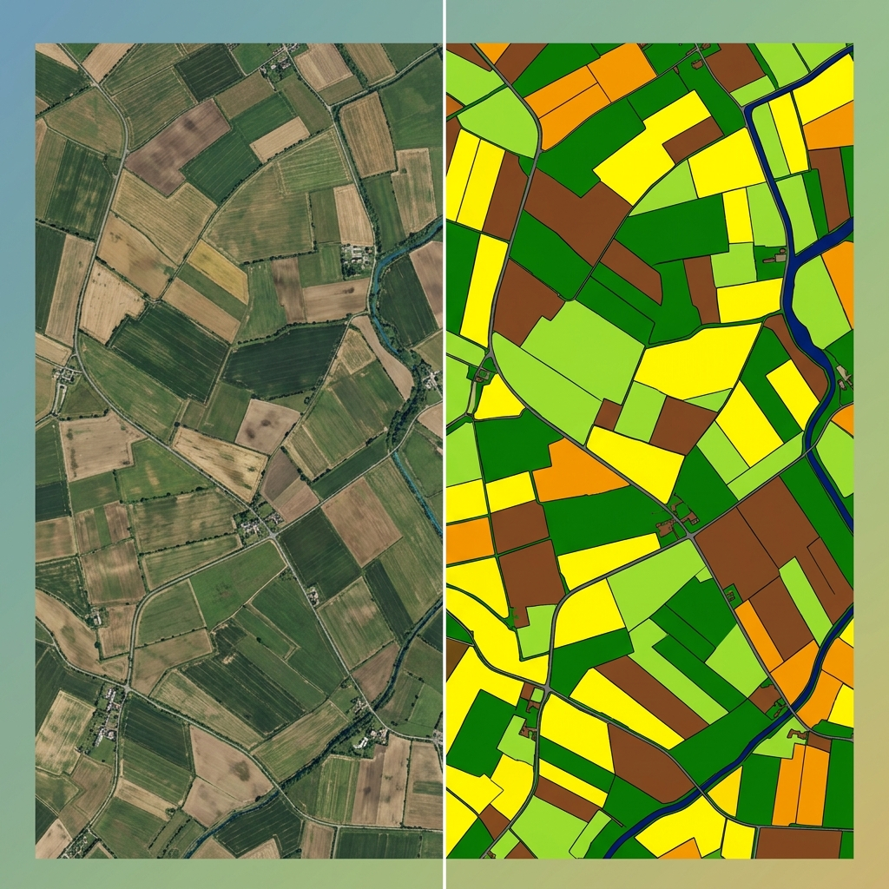
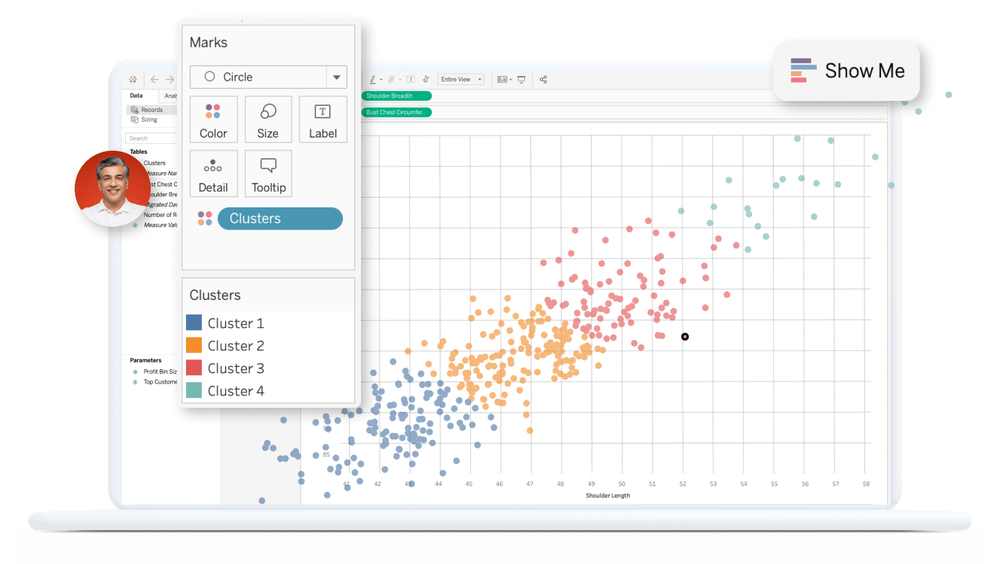

Utkarsh.
I turn requirements into working tools. I’m a business analyst who also builds, working with client, engineering, and QA teams on software rollouts and tools that make testing and follow-ups easier.
I understand what users need, write it clearly, and follow it through with engineering and QA.
A Little About Me
At SalesCode.ai, I worked on requirements, testing, and rollouts for FMCG clients in India, Saudi Arabia, and Nepal.
The work involved understanding what users needed, writing it clearly, and following it through with engineering and QA. When tracking work became a problem of its own, I started building tools to help.
I studied Electronics and Communication Engineering at VIT. Outside work, I enjoy photography and Formula 1.
Microsoft Certified: Azure Administrator Associate (AZ-104)
Validates enterprise capability in managing cloud identities, resource governance, virtual networks, and hybrid storage structures.
Where I've made impact.
A journey through enterprise tech, data analytics, and healthcare innovation.
- Managed requirements and delivery across 4 concurrent enterprise client engagements, preparing BRDs, user stories, acceptance criteria, Jira backlogs, UAT plans, and release documentation.
- Worked with product, engineering, QA, data science, and client teams through sprint planning, backlog refinement, UAT, defect triage, and production releases.
- Built a centralized integration and testing platform across 3 client workstreams, reducing status-tracking effort by 40%.
- Introduced AI-assisted workflows for user stories, acceptance criteria, and Confluence documentation, reducing requirements-drafting time by 30%.
- Coordinated UAT and release readiness across India, Saudi Arabia, and Nepal, maintaining zero P1 defects across consecutive releases.
- Delivered location-based analytics and geospatial dashboards using Python and PostgreSQL, directly supporting operational pricing adjustments and route optimization.
- Eliminated manual data entry bottlenecks by building automated scraping workflows, reducing weekly reporting overhead.
- Drove campaign planning and digital outreach strategies through targeted market research and user demographic analysis.
- Established a centralized tracking model for blood bank availability within a 15 km radius, ensuring data reliability for critical healthcare access.
- Structured the conceptual product workflow for a clinic booking and appointment management system.
- Informed advertising and monetization strategies through data-driven operational insights.
Things I've built & earned.
From AI-powered RTM platforms to satellite-based crop classification.

SAP Integration Testing Tracker
Testing updates were spread across spreadsheets and follow-ups. I built a shared tracker so the teams involved could see test results, pending issues, and what still needed sign-off.
- Centralized test entry management with CRUD-based workflows.
- Tracked integration progress across SAP and Salescode API touchpoints.
- Impact: Reduced status-tracking effort by 40% across 3 client workstreams.

L2 Client Escalation Portal
A real-time ticket triage system built to reduce Gmail-based escalation friction and improve SLA tracking for business analysts and support leads. It supports ticket sync, assignment routing, private internal notes, and follow-up reminders.
- Auto-routes incoming tickets based on email fields and ownership rules.
- Keeps internal notes separate from external communication.
- Outcome: Brought tickets, assignments, internal notes, and reminders into one operational view.

Satellite Crop Classification
A research project using Sentinel-1 SAR and Sentinel-2 optical imagery on Google Earth Engine to support crop identification and vegetation analysis with machine learning methods.

CityFlo BI Dashboards
Interactive dashboards built for location heat maps, market analysis, and pricing support using Python, scraping workflows, and PostgreSQL-backed data models.
Artificial Intelligence and Machine Learning
Powered by Google Developers — SmartInternz, Dec 2023
Microsoft Certified: Azure Administrator Associate (AZ-104)
Cloud infrastructure management, virtual networks, storage solutions, and identity/access management — Microsoft, Dec 2023
Verify Credential ↗
Business Analyst Experience Certification
Finlatics, Sep 2023
My toolkit.
A blend of business acumen, technical proficiency, and analytical thinking.
Let's build something
great together.
Have a role or project that could be a good fit? Email me with a little context. You can also find me on LinkedIn.